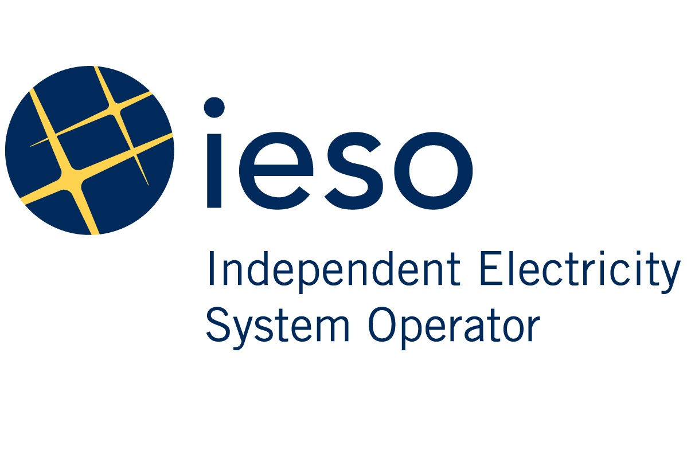

Careers
From internships to research experience, I have been involved in a variety of roles to expand my skillsets as well as learn about the industry itself.
Robotics & Computer Vision Lab, Ryerson University
Research Assistant
May 2020 - Present
 The Robotics and Computer Vision Lab is part of the Mechanical
Engineering Department.
The Robotics and Computer Vision Lab is part of the Mechanical
Engineering Department.
My research focus was in computer vision, particularly with a neuromorphic vision called SCAMP-5 which is a focal-plane sensor-processor (FPSP) array. My supervisor is Dr Sajad Saeedi, whos guidance has helped me improve my knowledge and skills in robotic navigation as well as in computer vision.
- Researched topics surrounding the use of deep learning methods for robotic navigation applications. Topics focused on camera-based navigation using supervised learning techniques with features learned from images alone.
- Developed shallow convolutional neural network (CNN) and implemented on a neuromorphic vision sensor (SCAMP-5) for navigation in corridor and racetrack settings using a Jetbot chassis.
- Image data was collected first from custom Gazebo worlds and verified by running a turtlebot using other Gazebo worlds before implementing into the real world.
- The performance of the SCAMP-5 was compared against the Jetson Nano's CPU, CPU+GPU, as well as the Intel ComputeStick2 VPU.
Robotic Simulation Software used:
ROS, Gazebo
Programming Languages and Libraries:
Python, C/C++, OpenCV, Keras, NumPy
Robotic Chassis:
Jetson Nano on a Jetbot
Independent Electricity System Operator (IESO)
Operations Intern
June 2020 - August 2021 (15 mo.)
 IESO, established in 1999 during the deregulation of Ontario's electricity supply and transmission market, is responsible for operating the electricity market and directing the bulk electrical system. Working at the heart of the power system, the corporation also plans for the province's future energy needs, improving and designing a more efficient electricity marketplace to ensure a proper sector evolution.
As part of the Market Forecast & Integration team, I was responsible for assisting the senior engineers with day-to-day tasks and finding possible ways to improve the processes involved with the DACP tasks as they are time sensitive.
- Assisted engineers by performing outage assessmenets for non-critical outages by going over electrical diagrams of individual stations, documenting contextual information and alerting for critical outages.
- Performed load-flow studies involving Leaside area, applying electrical theory and steady-state principles to complete thermal assessments.
- Developed and maintained DACP and TR tools, reducing the administrative burden from hours to minutes for TR tools while simplifying the processes for DACP tools.
- Consolidated data across multiple sources to reduce burden of finding information across multiple files and reduce risk of errors arising from limit changes.
- Trained and supervised new interns by job-shadowing, assigning projects and preparing documentations to preserve knowledge gained.
Software and Tools used:
Python, VBA, Tableau, WS500 SCADA, CROW, MS Access
De Havilland Aircraft of Canada Ltd (DHC)
Programs Analyst
May 2019 - August 2019 (4 mo.)
 De Havilland Aircraft of Canada Ltd is an an aircraft
manufacturer based out of Downsview, Toronto, Canada. The
original De Havilland of Canada was established in 1928 to help
with the war effort. Sold to Boeing in 1980s and then
Bombardier, the company was revived by Longview Aviation Capital
by purchasing the Q400 program along with the rights to de
Havilland name and trademark.
De Havilland Aircraft of Canada Ltd is an an aircraft
manufacturer based out of Downsview, Toronto, Canada. The
original De Havilland of Canada was established in 1928 to help
with the war effort. Sold to Boeing in 1980s and then
Bombardier, the company was revived by Longview Aviation Capital
by purchasing the Q400 program along with the rights to de
Havilland name and trademark.
With the transfer of ownership of the program, I assisted the Maintenance Engineering team by preparing documentations and administrative tools to smoothen the transition.
- Transferred the Policy and Procedures Handbook (PPH) framework to Adobe FrameMaker to reduce time spent on updating and creating new documentation.
- Created survey forms using Adobe LiveCycle Designer to gain insight on engine maintenance tasks done by operators to add supporting data for the introduction of new Engine Tasks to the Regional Best Practices List (RBPL).
- Prepared the Service Cost Matrix for maintenance planning services by assisting Sales Services in determining pricing of Maintenance Program Development services for new operators.
Software and Tools used:
Python, VBA, Microstrategy, Adobe FrameMaker, Adobe LiveCycle
Bombardier Aviation
Software Developer
May 2018 - August 2018 (4 mo.)
Bombardier is a global leader in aviation, headquartered in Dorval, Quebec, Canada, making commercial and business jets, along with trains. I was a part of the Maintenance Engineering team at the Downsview Airport plant, focusing on multiple projects.
My responsibility for Maintenance Engineering was to improve the overall processes of the team, as such, I worked on various projects:
- Developed the Corrosion Reporting and Database software (CPCP) for the Q400/Dash8 and CRJ series aircraft, used by over 100 airlines for reviewing Corrosion and Maintenance Reports analyzed by specialists in the department.
- Automated the creation of the Maintenance Review Board (MRB) Integrated Schedule to reduce the creation time for each schedule year by nearly 80%. The schedule was used by the department to coordinate with regulatory bodies such as the FAA and EASA to easily set up maintenance task review meetings for any proposed changes.
- Participated in weekly meetings with team to discuss progress in projects, roadblocks encountered and new features to implemented, as well as documentations for maintaining the features implemented.
Software and Tools used:
Python, VBA, Microstrategy